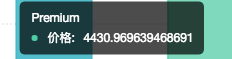

教程
tooltip 简介
提示信息(tooltip)，用于显示图表的详细信息，鼠标在图表上移动时，提示信息会显示当前点对应数据的一些信息：
- point(点图）,polygon(热力图）在hover上时，显示对应的点的一些信息；
- 折线图、区域图、interval 根据 x 坐标轴的点来显示数据的信息；
- 一个图表上有多个图层时，会同时显示各个图层的信息。
- 单个图形（Geom)，可以指定自己的tooltip信息
tooltip 语法
chart.tooltip(true, cfg); // 可用 tooltip，并配置 tooltip 配置信息
chart.tooltip(cfg); // 配置 tooltip 信息
chart.tooltip(false) // 禁用 tooltip单个图形的tooltip语法
chart.<geom>.tooltip('dim1*dim2...dimn');- line, interval等所有的图形都可以指定多个字段显示在提示信息上，每个字段占一行
- 每行的格式是：字段的名称（别名）：字段值
chart.line().position('carat*price').color('cut').tooltip('price*cut');tooltip 配置信息
chart.tooltip(enable, cfg) 控制提示信息是否显示，和一些配置信息。
enable 是个布尔值，控制提示信息是否展示，默认为 true。以下展示的是具体的 cfg 配置项，更详细的使用方法请参见 chart.tooltip() API。
| cfg 配置项 | 说明 |
|---|---|
| offset | 偏移量，设置 tooltip 显示位置时距离当前鼠标 x 轴方向上的距离。 |
| crosshairs | 是否显示贯穿坐标轴的辅助线。 |
| title | 标题的配置项。 |
| border | 边框的配置项。 |
| custom | 是否使用自定义html，默认 false。 |
| html | tooltip的html外层模板。 |
| itemTpl | 使用html时每一项的模板，默认支持index,name和value。 |
| map | 图表数据跟 tooltip 内容的映射，包含 3 个字段的映射 'title','name','value'，如果指定的字段是图表中的数据字段，则映射对应的数据，否则作为字符串输出 |
chart.tooltip({
map: {
title: 'cut', // 标题展示 cut 字段值
name: '价格',
value: 'price'
}
});上述代码的显示效果为：
指定 tooltip 的显示信息
下面的示例将温度和月份都显示成一行。
var data = [
{"month":0,"tem":7,"city":"tokyo"},
{"month":1,"tem":6.9,"city":"tokyo"},
{"month":2,"tem":9.5,"city":"tokyo"},
{"month":3,"tem":14.5,"city":"tokyo"},
{"month":4,"tem":18.2,"city":"tokyo"},
{"month":5,"tem":21.5,"city":"tokyo"},
{"month":6,"tem":25.2,"city":"tokyo"},
{"month":7,"tem":26.5,"city":"tokyo"},
{"month":8,"tem":23.3,"city":"tokyo"},
{"month":9,"tem":18.3,"city":"tokyo"},
{"month":10,"tem":13.9,"city":"tokyo"},
{"month":11,"tem":9.6,"city":"tokyo"}
];
var chart = new G2.Chart({
id: 'c2',
width: 800,
height: 300
});
var defs = {
'month':{
type: 'cat',
alias: '月份', // 别名，如果没有别名显示成字段名 month
values: [
'一月','二月','三月','四月','五月','六月',
'七月','八月','九月','十月','十一月','十二月']
},
'tem': {
alias: '温度'
}
};
chart.source(data,defs);
chart.tooltip(true, {
title: null // 默认标题不显示
});
chart.line().position('month*tem').tooltip('month*tem');
chart.render();格式化提示信息示例
$.getJSON('/data.json?filename=diamond', function(data) {
var Stat = G2.Stat;
var chart = new G2.Chart({
id: 'c22',
width: 800,
height: 400,
plotCfg: {
margin: [20, 80, 60, 60]
}
});
chart.source(data);
chart.coord('theta', {
radius: 0.6 // 设置饼图的半径，设置的数值必须在 [0, 1] 范围内
});
// 不同 cut（切割工艺）所占的比例
chart.intervalStack()
.position(Stat.summary.proportion())
.color('cut');
chart.render();
chart.on('tooltipchange',function(ev){
var item = ev.items[0]; // 获取tooltip要显示的内容
item.value = '格式化-' + item.value;
});
});自定义提示信息示例
<style>
.pie-container{
position:absolute;
visibility:hidden;
border : 1px solid #efefef;
background-color: white;
opacity: .8;
padding: 5px;
transition: top 200ms,left 200ms;
-moz-transition: top 200ms,left 200ms; /* Firefox 4 */
-webkit-transition: top 200ms,left 200ms; /* Safari 和 Chrome */
-o-transition: top 200ms,left 200ms;
}
</style>
<div id="c3"></div>
<div style="display:none">
<div id="p1" class="pie-container ac-tooltip">
<span>细节分步图</span>
<div id="c4"></div>
</div>
</div> var Stat = G2.Stat;
var data = [
{name: '类别1',value: 10,children: [
{name: '类别11',value: 18},
{name: '类别12',value: 10},
{name: '类别13',value: 7},
{name: '类别14',value: 12}
]},
{name: '类别2',value: 8,children: [
{name: '类别21',value: 28},
{name: '类别22',value: 20},
{name: '类别23',value: 7},
{name: '类别24',value: 2}
]},
{name: '类别3',value: 4,children: [
{name: '类别31',value: 14},
{name: '类别32',value: 12},
{name: '类别33',value: 6},
{name: '类别34',value: 1}
]},
{name: '类别4',value: 9,children: [
{name: '类别41',value: 38},
{name: '类别42',value: 10},
{name: '类别43',value: 17},
{name: '类别44',value: 22}
]}
];
var chart = new G2.Chart({
id: 'c3',
animate: false,
width: 800,
height: 400
});
var defs = {
'value': {
min: 0
}
};
chart.source(data);
chart.tooltip(true, {
custom: true,
html: '#p1'
});
chart.interval().position('name*value').color('name'); // 绘制柱状图
chart.render();
var chart2 = new G2.Chart({
id: 'c4',
animate: false,
width: 300,
height: 300,
plotCfg: {
margin: [0, 0, 35] // 设置边框
}
});
chart2.coord('theta');
chart2.legend('bottom', {
title: null
});
// 查找对应的数据
function findObj(name) {
var rst = null
data.forEach(function(item) {
if (item.name === name) {
rst = item;
}
});
return rst;
}
// 监听 tooltip 改变事件
chart.on('tooltipchange', function(ev) {
var item = ev.items[0]; // 获取tooltip要显示的内容
var name = item.name;
var obj = findObj(name);
if (obj) {
chart2.clear();
chart2.source(obj.children);
chart2.intervalStack().position(Stat.summary.percent('value')).color('name');
chart2.render();
}
});自定义 html 模板示例
<style>
.ac-tooltip{
position:absolute;
visibility:hidden;
border : 1px solid #efefef;
background-color: white;
opacity: .8;
padding: 20px;
transition: top 200ms,left 200ms;
-moz-transition: top 200ms,left 200ms; /* Firefox 4 */
-webkit-transition: top 200ms,left 200ms; /* Safari 和 Chrome */
-o-transition: top 200ms,left 200ms;
}
.ac-tooltip .ac-title{
margin: 0;
padding: 5px 0;
}
.ac-tooltip .ac-list{
margin: 0;
padding: 0;
list-style: none;
}
.ac-tooltip li{
line-height: 22px;
}
</style>
<div id="c1" class="chart-container"></div>var data = [
{"month":0,"tem":7,"city":"tokyo"},
{"month":1,"tem":6.9,"city":"tokyo"},
{"month":2,"tem":9.5,"city":"tokyo"},
{"month":3,"tem":14.5,"city":"tokyo"},
{"month":4,"tem":18.2,"city":"tokyo"},
{"month":5,"tem":21.5,"city":"tokyo"},
{"month":6,"tem":25.2,"city":"tokyo"},
{"month":7,"tem":26.5,"city":"tokyo"},
{"month":8,"tem":23.3,"city":"tokyo"},
{"month":9,"tem":18.3,"city":"tokyo"},
{"month":10,"tem":13.9,"city":"tokyo"},
{"month":11,"tem":9.6,"city":"tokyo"},
{"month":0,"tem":-0.2,"city":"newYork"},
{"month":1,"tem":0.8,"city":"newYork"},
{"month":2,"tem":5.7,"city":"newYork"},
{"month":3,"tem":11.3,"city":"newYork"},
{"month":4,"tem":17,"city":"newYork"},
{"month":5,"tem":22,"city":"newYork"},
{"month":6,"tem":24.8,"city":"newYork"},
{"month":7,"tem":24.1,"city":"newYork"},
{"month":8,"tem":20.1,"city":"newYork"},
{"month":9,"tem":14.1,"city":"newYork"},
{"month":10,"tem":8.6,"city":"newYork"},
{"month":11,"tem":2.5,"city":"newYork"},
{"month":0,"tem":-0.9,"city":"berlin"},
{"month":1,"tem":0.6,"city":"berlin"},
{"month":2,"tem":3.5,"city":"berlin"},
{"month":3,"tem":8.4,"city":"berlin"},
{"month":4,"tem":13.5,"city":"berlin"},
{"month":5,"tem":17,"city":"berlin"},
{"month":6,"tem":18.6,"city":"berlin"},
{"month":7,"tem":17.9,"city":"berlin"},
{"month":8,"tem":14.3,"city":"berlin"},
{"month":9,"tem":9,"city":"berlin"},
{"month":10,"tem":3.9,"city":"berlin"},
{"month":11,"tem":1,"city":"berlin"}
];
var chart = new G2.Chart({
id: 'c1',
width: 800,
height: 300
});
var defs = {'month':{
type: 'cat',
values: [
'一月','二月','三月','四月','五月','六月',
'七月','八月','九月','十月','十一月','十二月']
}};
chart.source(data,defs);
chart.tooltip(true, {
custom: true // 使用自定义的 tooltip
});
chart.line().position('month*tem').color('city');
chart.render();更改 tooltip 信息示例
var data = [ // 数据
{"time": 1428163200000,"start": 469,"end": 480},
{"time": 1428163203600,"start": 480,"end": 430},
{"time": 1428163207200,"start": 430,"end": 410},
{"time": 1428163210800,"start": 410,"end": 420},
{"time": 1428163214400,"start": 420,"end": 440},
{"time": 1428163218000,"start": 440,"end": 460},
{"time": 1428163221600,"start": 460,"end": 410},
{"time": 1428163225200,"start": 410,"end": 440},
{"time": 1428163228800,"start": 440,"end": 490}
];
var frame = new G2.Frame(data); // 创建数据源
frame.addCol('range', function(obj) { // 添加列
return [obj.start, obj.end];
});
frame.addCol('trend', function(obj) {
return (obj.start <= obj.end) ? 0 : 1;
});
var chart = new G2.Chart({
id: 'c5',
width: 800,
height: 400
});
var defs = {
'time': { // 设置日期类型
type: 'time',
mask: 'yyyy-mm-dd HH:MM:ss'
},
'trend': { //设置条件，显示不同的颜色
type: 'condition',
alias: '趋势',
values: ['上涨', '下跌']
}
};
chart.source(frame, defs);
chart.interval().position('time*range').color('trend', ['#1bbd19', '#fa513a']).size(20);
chart.render();
chart.on('tooltipchange', function(ev) {
var items = ev.items; // tooltip显示的项
var origin = items[0]; // 将一条数据改成多条数据
var range = origin.point.range;
items.splice(0); // 清空
items.push({
name: '开始值',
title: origin.title,
marker: true,
color: origin.color,
value: range[0]
});
items.push({
name: '结束值',
marker: true,
title: origin.title,
color: origin.color,
value: range[1]
});
});更多
下面让我们来学习下 Guide。